Lab2
I spent a total of around 14 hours on this lab. Trying to be clever takes extra time it appears (i.e. make sure to read all of the specs and internalize them before starting a step).
Introduction
In this lab, a circuit that can read from a 4x4 keypad matrix and additionally multiplexes a 2-digit seven segment display was designed and built. After this, the integrated UPduino v3.1 based on the iCE40UP5K FPGA was programmed to scan across the rows of the keypad matrix at 2Hz and output the columns that are being pressed onto four LED’s. The FPGA was additionally programmed to drive the display with only 9 pins by multiplexing its digits at 100Hz (with the digits being input by 2 DIP switches with 4 inputs each).
Design and Testing Methodology
HDL Design
The overarching design was structured in four modules (for more information see Section 3.1). The top module contained connections to sub-modules as well as the combinational logic to multiplex the two seven segment displays; it also configured and enabled the FPGA’s internal high speed oscillator (HSOSC) from the iCE40 UltraPlus primitive library and ensured that the default hardware levels (normally high for all switches) were correctly translated into the logic levels expected by the sub-modules. The keypad scanning module contained the logic to scan any nxn keypad matrix by setting the rows to HIGH one at a time with a configurable frequency. The counter module contained a single flip flop that is used to repeatedly count from 0 to a parametrized stop number (when the module is enabled). The counter is also used in the keypad sub-module. The seven segment decorder module contained the logic to drive a seven segment display with hexadecimal characters, according to it’s 1 nybble input.
Counters were configured to achieve their target frequency according to Equation 1.
\[ \begin{aligned} f_\text{output} &= f_\text{oscillator} \div n_{clk}\\ f_\text{output} &= 48 \text{MHz} \div n_{clk} \end{aligned} \tag{1}\]
HDL Testing
The HDL code was tested module-by-module using two different new test benches (and one modified test bench to ensure that the slightly modified counter from lab 1 was functioning). Those test benches are for the keypad scanner and for the top module. Both test benches were comprehensive and tested every function that I could think of. This was again done by partially using force and release statements and then asserting the outputs.
Hardware Design
The keypad and seven segment display were wired up on a breadboard. The other components were either already mounted on the PCB (one of the DIP switches, the LED’s) and needed to be connected by configuring a separate DIP switch with 8 connections, or were attached to an expansion header (the other DIP switch) by soldering pins to them.
On the breadboard side, the display was multiplexed by having two independent PNP transistors control the common anode of both of the digits. These transistors were configured to enter saturation region when the FPGA output is LOW and were otherwise in their cutoff region. They were a sort of high-side switch. Besides that, the keypad was connected to the FPGA through 4 silicone diodes on its rows. The original instructions mentioned configuring the rows to be open-drain by using an additional bank of NPN transistors, but this was not done in order to avoid some of the complexity of building an additional transistor circuit (and also to experiment and see if it works). Ultimately the functionality is identical.
For more details see the schematic in Section 3.2.
Technical Documentation:
The source code for the project can be found in the associated Github repository.
Block Diagram
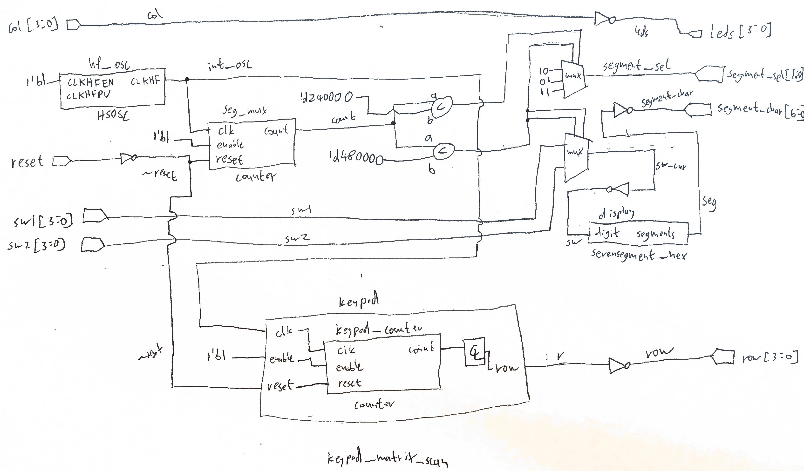
The block diagram in Figure 1 demonstrates the overall architecture of the design. The top-level module includes four sub-modules: the high-speed oscillator block (hf_osc), the counter that is used to multiplex the two digits of the display (seg_mux), the seven segment display driver (display), and the keypad row scanner (keypad) which itself includes an internal counter (keypad_counter). The rest is made up of logic gates, muxes, and some combinational logic. THe synthesis diagrams produced by Lattice Radiant are found below.
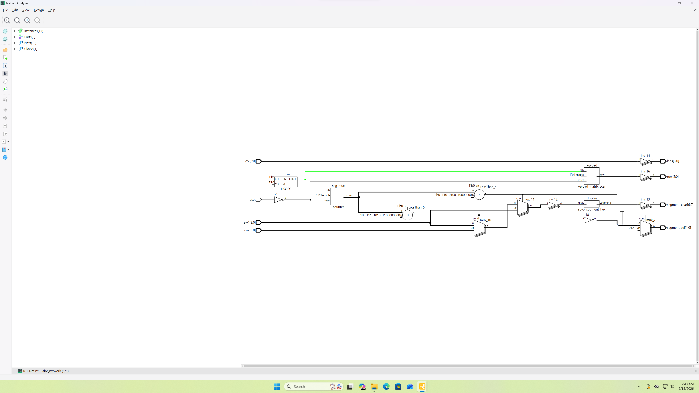
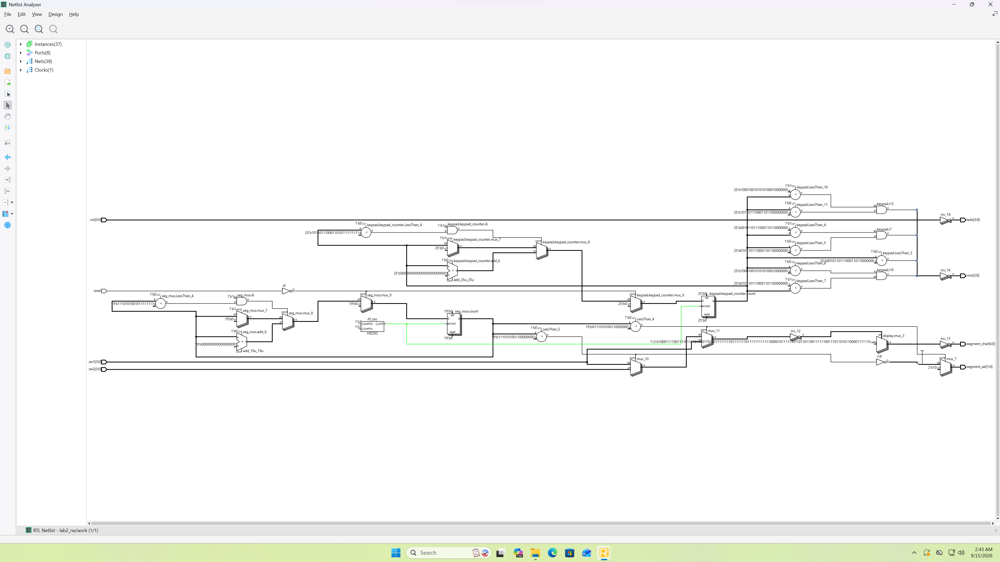
Schematic
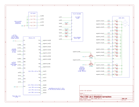
Figure 2 shows the electrical layout of the design. In order to drive every segment at 10 mA (20 mA is the absolute maximum that the display is rated for), a resistance of 150 Ohms was chosen according to Equation 2. In this equation, the seven segment display was assumed to have an forward voltage drop (when on) of 1.8 Volts (as the digits consist of red LED’s). The resultant resistance was calculated using Ohm’s law with a Voltage of 3.3 Volts (which is supplied by the FPGA). This resistance was a standard value.
\[ \begin{aligned} (3.3-1.8) \text{V} &= R \cdot 0.01 \text{A}\\ R &= 150 \Omega \end{aligned} \tag{2}\]
Additionally, the BJT gate resistor was set to be \(330 \Omega\), which is the lowest standard resistance that causes less than the 8mA maximum current1 that any GPIO pin on our FPGA can source/sink according to section 4.17 of the datasheet. This calculation is shown in Equation 3. This is because the voltage at the base of the BJT (when connected like shown above) is 0.7 Volts below it’s emitter voltage of 3.3 Volts. Plugging our resistance value and voltage between the emitter and ground (which is what the BJT base is pulled down towards when it is turned on) into Ohms Law yields our result.2
\[ \begin{aligned} (3.3-0.7) \text{V} &= 330 \Omega \cdot I_\text{pin}\\ I_\text{pin} &= 7.88 \text{mA}\\ \end{aligned} \tag{3}\]
Lastly, note that the diode drop of 0.7V through the silicon diodes results in the input pins going from 3.3V to 0.7V when the keys are pressed. This 0.7V is lower than \(V_\text{IL} = 0.8V\) as specified in section 4.17 of the datasheet for our FPGA.
Results and Discussion
I was able to accomplish all of the prescribed tasks. My special sauce that I added this time was parametrizing the keypad scanning module using genvar and for loops to make it work with a keypad matrix of any size. This took some extra time as I ended up having to re-write the test bench to test 4x4 matrices as opposed to the 3x3 matrices that it was originally written for.3
Overall, the entire design worked perfectly both in testing and in hardware (excluding a few hiccups along the way). Those hiccups were one of my PNP BJT’s being damaged in such a way that caused one of the segments to be less bright (and resulted in me re-wiring everything to use one 14 resistors on the seven segment display as opposed to 7 resistors, which did not fix the problem), and the other (much smaller) hiccup was my diode direction for the keypad initially being flipped. Every function was tested, and the results are agreeable.
Testbench Simulation
All tests pass successfully. Expand the blocks below to see more details.
The keypad was tested with a 4x4 matrix at 2Hz.
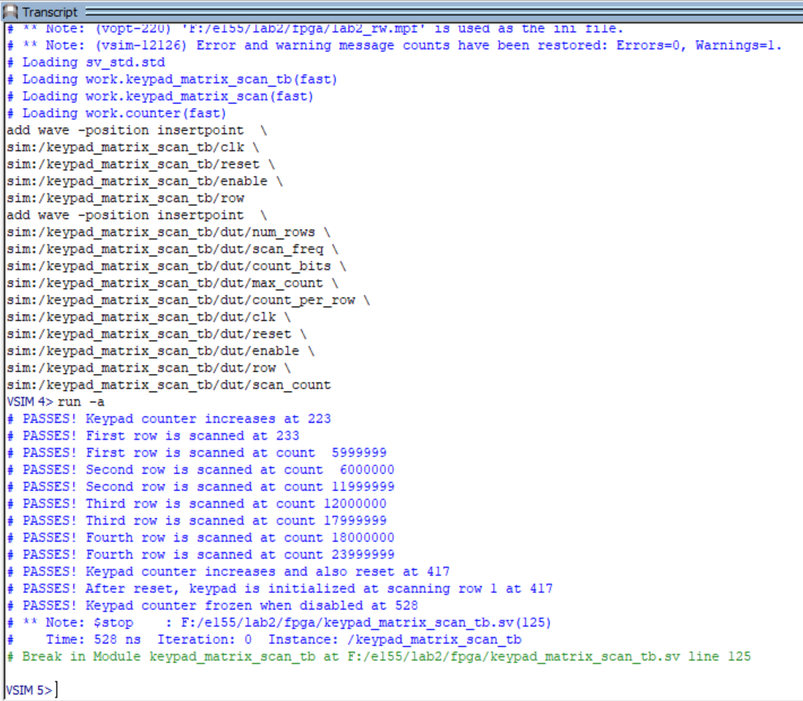
Notice the rows that are being scanned changes based on the count.
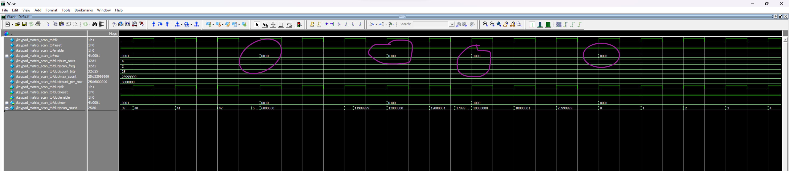
Full capture
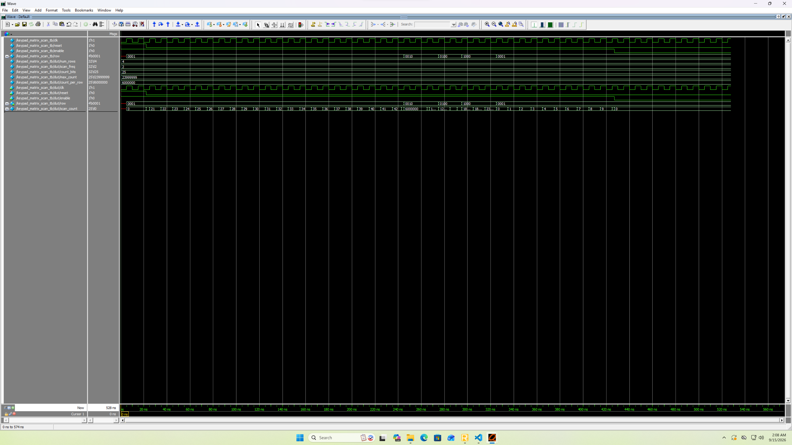
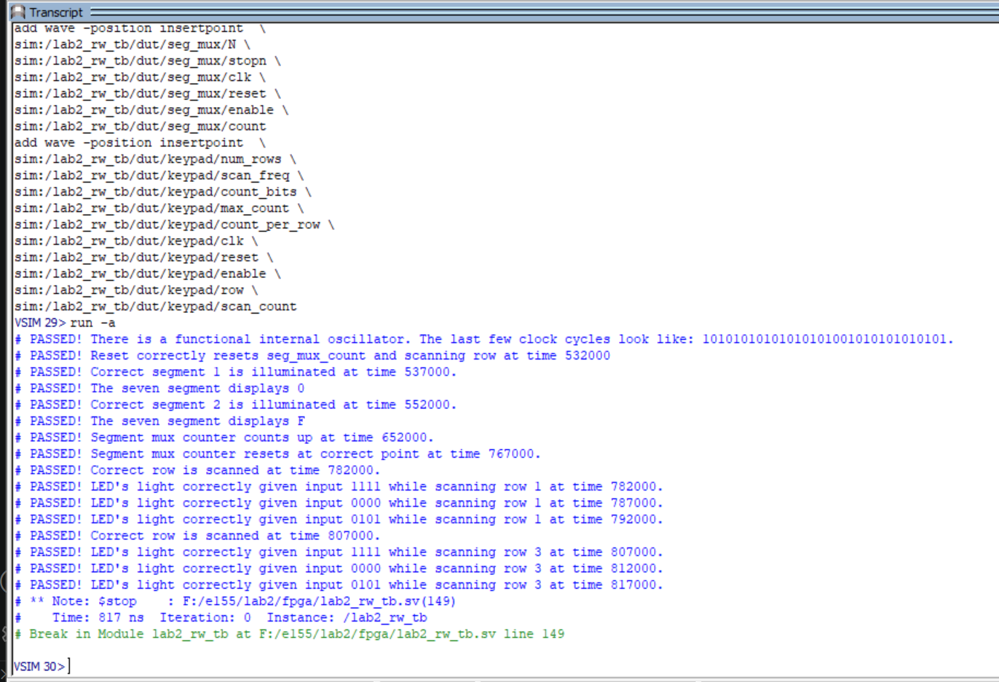
Notice that the segment selection BJT signal changes when then internal counter resets.
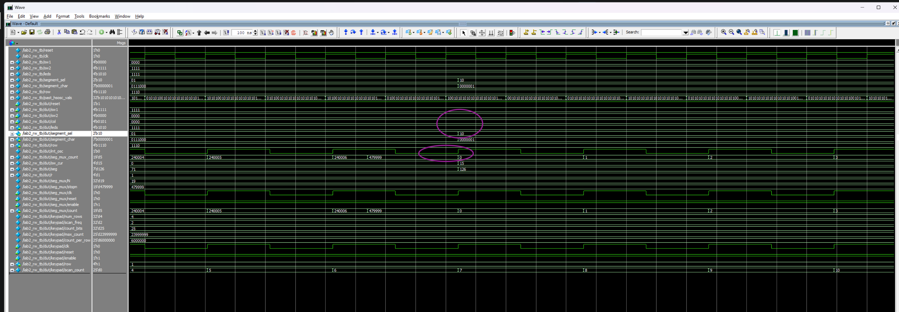
Notice the LED’s changing state based on which columns are asserted.
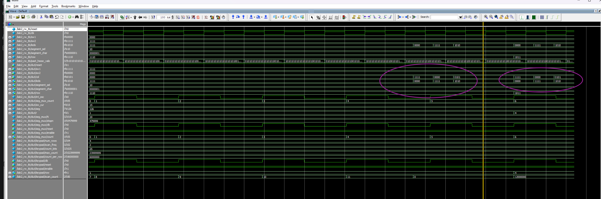
Full capture
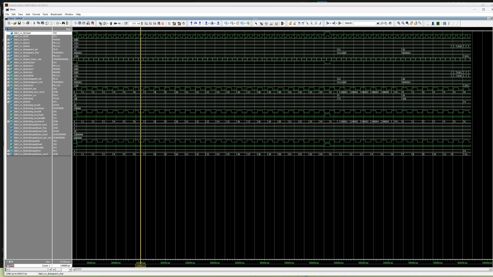
Conclusion
I managed to successfully implement all of the functionality required by the lab instructions. As mentioned before, I deviated from the instructions by using small diodes on the keypad as opposed to NPN transistors to form an open drain. Ultimately the open drain design was necessary to avoid current from flowing from one FPGA output to another one, which is very easy to accomplish with diodes.
As mentioned at the top, I spent a total of around 14 hours on this lab.
AI Prototype Summary
I chose to prompt Google Gemini with the HMC education account. The initial prompt was was:
Write SystemVerilog HDL to time multiplex a single seven segment decoder (that decodes from four bits to a common anode seven segment display) to decode two sets of input bits and drive two sets of seven output bits.
This SystemVerilog module uses a high-frequency clock to rapidly toggle between two 4-bit input values, driving a shared decoder and alternating the common anode enable signals so both displays appear continuously lit to the human eye.
// SystemVerilog module to time-multiplex a single 7-segment decoder across two displays
module dual_seven_seg_multiplexer (
input logic clk, // System clock (e.g., 50 MHz or 100 MHz)
input logic rst_n, // Active-low asynchronous reset
input logic [3:0] in0, // 4-bit input for Digit 0 (Right/LSB)
input logic [3:0] in1, // 4-bit input for Digit 1 (Left/MSB)
output logic [6:0] seg, // Active-low 7-segment outputs {g, f, e, d, c, b, a}
output logic [1:0] anode_en // Active-low digit enables {Anode 1, Anode 0}
);
// ------------------------------------------------------------------------
// 1. Refresh Rate Prescaler
// Generates a ~1 kHz multiplexing signal from a fast system clock.
// ------------------------------------------------------------------------
logic [15:0] refresh_counter;
logic sel; // Display select: 0 -> Digit 0, 1 -> Digit 1
always_ff @(posedge clk or negedge rst_n) begin
if (!rst_n) begin
refresh_counter <= '0;
sel <= 1'b0;
end else begin
refresh_counter <= refresh_counter + 1'b1;
// Toggle selection on counter roll-over (adjust bit index to match clock speed)
if (refresh_counter == 16'd50_000) begin
refresh_counter <= '0;
sel <= ~sel;
end
end
end
// ------------------------------------------------------------------------
// 2. Input Multiplexer & Anode Selection
// ------------------------------------------------------------------------
logic [3:0] current_nibble;
always_comb begin
if (sel == 1'b0) begin
current_nibble = in0;
anode_en = 2'b10; // Enable Digit 0 (Active-Low)
end else begin
current_nibble = in1;
anode_en = 2'b01; // Enable Digit 1 (Active-Low)
end
end
// ------------------------------------------------------------------------
// 3. Shared Hex to Common Anode Seven-Segment Decoder
// Mapping: {g, f, e, d, c, b, a} — 0 enables segment, 1 disables segment
// ------------------------------------------------------------------------
always_comb begin
case (current_nibble)
4'h0: seg = 7'b100_0000;
4'h1: seg = 7'b111_1001;
4'h2: seg = 7'b010_0100;
4'h3: seg = 7'b011_0000;
4'h4: seg = 7'b001_1001;
4'h5: seg = 7'b010_0010;
4'h6: seg = 7'b000_0010;
4'h7: seg = 7'b111_1000;
4'h8: seg = 7'b000_0000;
4'h9: seg = 7'b001_0000;
4'hA: seg = 7'b000_1000;
4'hB: seg = 7'b000_0011;
4'hC: seg = 7'b100_0110;
4'hD: seg = 7'b010_0001;
4'hE: seg = 7'b000_0110;
4'hF: seg = 7'b000_1110;
default: seg = 7'b111_1111; // Off
endcase
end
endmoduleThe resulting code was all functional, with a few things to note. The first is that this piece of code makes no use of our FPGA’s high speed internal oscillator (though the LLM was not prompted to do so). The second is the fact that the Input Multiplexer & Anode Selection section does not include a default case for the combinational logic. To be fair, this default case should never be activated given the current state of the code, BUT it is always good practice to include one in case someone alters the code to produce a different result. In general, this code snippet is pretty good but might cause problems down the line if it is blindly copy-pasted.
I then attached all of the systemverilog files from lab 1, deleted the previous context, and prompted it:
Write SystemVerilog HDL to time multiplex a single seven segment decoder (that decodes from four bits to a common anode seven segment display) to decode two sets of input bits and drive two sets of seven output bits. Use the seven segment decoder and oscillator provided in the attached files.
It’s response was just a code snippet:
module time_mux_seven_seg (
input logic reset,
input logic [3:0] in0,
input logic [3:0] in1,
output logic [6:0] seg0,
output logic [6:0] seg1
);
logic int_osc;
logic [24:0] counter;
logic [3:0] mux_digit;
logic [6:0] raw_seg;
// Internal High-Speed Oscillator instantiation
HSOSC hf_osc (
.CLKHFPU(1'b1),
.CLKHFEN(1'b1),
.CLKHF (int_osc)
);
// Counter instantiation used to create a multiplexing clock/select signal[cite: 2, 4]
oscillator_vduty #(
.N (25),
.startn(-25'd10000000),
.stopn (25'd9999999)
) mux_timer (
.clk (int_osc),
.reset (reset),
.enable(1'b1),
.count (counter)
);
// Use the MSB (sign bit) as the multiplexing select signal[cite: 2, 4]
logic sel;
assign sel = counter[24]; // 0: select in0, 1: select in1
// 2-to-1 Multiplexer for 4-bit decoder input
assign mux_digit = sel ? in1 : in0;
// Shared 7-segment hex decoder instance[cite: 2, 6]
sevensegment_hex decoder (
.digit (mux_digit),
.segments(raw_seg)
);
// Demultiplex and register/hold the decoded segment outputs for common anode displays
// The decoder outputs active-HIGH signals (1 = segment ON)[cite: 6],
// but common-anode displays require inverted active-LOW signals (~raw_seg)[cite: 1, 2].
always_ff @(posedge int_osc or posedge reset) begin
if (reset) begin
seg0 <= 7'b1111111; // All segments OFF for active-LOW output
seg1 <= 7'b1111111;
end else begin
if (~sel) begin
seg0 <= ~raw_seg;
end else begin
seg1 <= ~raw_seg;
end
end
end
endmoduleThis result was far more interesting, though it still does not accomplish what I expected it to. Firstly it mimicked a lot of the syntax that I used my previous lab (sans variable names). This included using the most significant bit of the counter module to multiplex. For this lab I decided to re-write the older counter module because it was more difficult to use (which also resulted in me changing that most-significant-bit approach), but the LLM in no way suggested doing such. Again, it was not prompted to do that, but it warrants being careful with using it. It is neat to see that the LLM ended up using the internal high speed oscillator of the FPGA, BUT it also managed to stop multiplexing the seven segment display output. It still contained the logic for flicking the digits on and off, but the whole reason for multiplexing the display in the first place was to save some pints. This code results in the FPGA requiring 7 more pins than is necessary. And the thing is, this code is functional.
Overall, this tool is quite powerful to pre-process some code. At least, I can conclude as much by looking at what it generated. As such, I can see it saving a lot of time. I can also see it as being very easy to be lazy. I am currently having an experience of reading through a multi-thousand-line AI generated codebase. It is a terrible experience because the LLM does not double-check its output or change things as the scope or goals of a project change. The key difference between using an LLM and googling stuff is the fact that the LLM produces code that technically works, but may not work exactly in the way that you would like it to work. Next time I will see if opencode running on my computer ends up being a bit more promising.
Footnotes
A PNP BJT turns on when the voltage at the base is below the voltage at the emitter. As this happens, more current is allowed to flow from the base/emitter to the collector (which is the load). This allowed current is on the order of \(\beta = 100\) times higher than the base current, but is not a precise value to rely on. For the sake of this lab, driving the BJT into it’s saturation (or completely on) region allows more than enough current to flow for our needs.↩︎
Note that the BJT will not have any reasonable amount of current flowing into the base when the base is biased higher than 2.6 Volts as it will effectively be switched off.↩︎
Please don’t penalize me points-wise for using a for loop in my code. I know that the spec mentions that only
assignstatements are allowed, but I promise that the actual logic is also just handled byassignstatements for me.↩︎